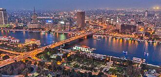

The Pyramids of Giza
Located on the outskirts of Cairo, the Pyramids of Giza are one of the Seven Wonders of the Ancient World.
Cairo is the capital of Egypt, known for its rich history, vibrant streets, and world-famous monuments. It's one of the largest cities in Africa and the Arab world.
Located on the outskirts of Cairo, the Pyramids of Giza are one of the Seven Wonders of the Ancient World.
This museum is home to the largest collection of ancient Egyptian artifacts.
Cairo is known for its delicious and unique traditional dishes. Here are some popular ones: